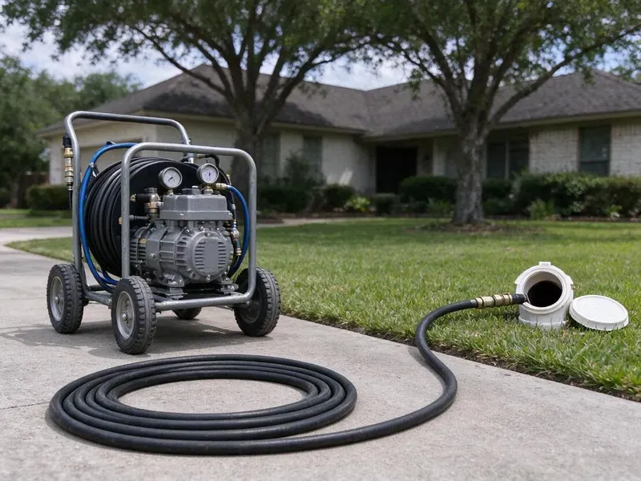

Hydro Jetting in Murfreesboro, TN
For tough blockages in Murfreesboro, TN that traditional methods can't clear, hydro jetting from BGV Plumbing is the answer.
- Pipe-Safe Pressure Settings
- Prevents Future Blockages
- Fast Clog Removal
- High-Pressure Cleaning

Expert Hydro Jetting Services in Murfreesboro, TN.
One thorough jetting often replaces years of repeat snaking visits.
Reliable Hydro Jetting Services in Murfreesboro, TN
BGV Plumbing specializes in hydro jetting, a very effective method for clearing tough blockages and thoroughly cleaning your drain and sewer lines. This service is ideal for removing years of grease, scale, and root intrusion that commonly plague plumbing systems in Murfreesboro, TN.
Our expertise includes:
- Prevent recurring clogs with thorough pipe cleaning.
- Restore full flow to residential and commercial pipes.
- Preventative maintenance hydro jetting for businesses

Additional Drain Services Services in Murfreesboro, TN
From stubborn kitchen clogs to main sewer backups, our drain services in Murfreesboro, TN clear the line and keep it clear with camera-verified results.


Customers
Why Choose BGV Plumbing for Hydro Jetting in Murfreesboro, TN?
A cable punches a hole through a blockage, but grease and scale stay on the pipe walls and catch new debris. Jetting removes that coating so the line stays clear much longer.
- Preventative Care, Regular hydro jetting can prevent future clogs and lengthen the life of your plumbing system.
- Chemical Free, Hydro jetting uses only water, so nothing harsh goes into your plumbing or the sewer system.
- Tough Blockages, It reliably breaks apart grease, mineral scale, sludge, and even invasive tree roots that snaking cannot fully dislodge.
Citywide Coverage
Our jetting units serve every neighborhood in Murfreesboro, from tight older lots to commercial strips with long sewer runs. Cart jetters fit through side gates and into garages where a trailer can't reach.
Experienced Team
Each technician at BGV Plumbing has the knowledge and tools to handle different types of blockages and pipe diameters, delivering precise and powerful cleaning. You can count on our expertise for your hydro jetting needs in Murfreesboro, TN.
Safety-First Approach
Before starting hydro jetting, we often conduct a camera inspection to make sure your pipes can withstand the high pressure, preventing potential damage. This careful approach gives a safe and effective cleaning process for every job in Murfreesboro.
Trusted Certified Murfreesboro Plumbing Services Professionals
At BGV Plumbing, we take pride in providing licensed, certified plumbing services throughout Murfreesboro, TN. Backed by recognized industry credentials, our experienced plumbers combine technical skill with genuine customer care. Whether it is repair, installation, or maintenance, we follow strict safety and quality standards to deliver long-lasting results you can trust.
Call Us Now PHCC Plumbing Contractor Recognition
PHCC Plumbing Contractor Recognition Better Business Bureau (BBB) Accreditation
Better Business Bureau (BBB) Accreditation Angi Certified Pro
Angi Certified Pro ISO 9001 Quality Management Certification
ISO 9001 Quality Management CertificationThorough Hydro Jetting Services in Murfreesboro, TN
Emergency Hydro Jetting in Murfreesboro, TN
A completely backed-up drain or sewer line requires immediate attention. BGV Plumbing offers emergency hydro jetting across Murfreesboro, TN, to address critical blockages quickly. Our technicians are available to respond fast, minimizing water damage and restoring your plumbing as soon as possible. We understand that some clogs just cannot wait.

High-Pressure Water Jetting for Drain Cleaning in Murfreesboro
High-pressure water jetting, or hydro jetting, is a non-invasive method that uses strongly pressurized water to clear and clean pipes. Our equipment in Murfreesboro can generate water pressures up to 4,000 PSI, powerful enough to break apart stubborn blockages and scour pipe walls clean without chemicals. This method is effective for many pipe materials, from PVC to cast iron, and is an environmentally friendly choice for deep drain cleaning.
Commercial Hydro Jetting in Murfreesboro, TN
Businesses in Murfreesboro, TN often deal with high volumes of waste and specific types of buildup, such as food grease in restaurants or industrial debris. Our commercial hydro jetting is designed for the larger, more complex plumbing systems found in commercial properties. We thoroughly clear heavily impacted lines, preventing costly downtime and keeping your business running smoothly. This service is crucial for maintaining health code compliance and avoiding severe backups in high-usage settings.
Root Cutting With Hydro Jetting in Murfreesboro
Specialty root-cutting nozzles spin or use focused streams to slice through fine roots inside a sewer. This is effective on root hairs that a cable saw can leave behind. Roots from yard trees and shrubs often enter at clay pipe joints or cracks. Jetting clears them out and gives a clean view of each entry point on camera. That helps you decide whether lining or a spot repair is the next step.
Tree Root Removal with Hydro Jetting in Murfreesboro
Tree roots are a common problem in Murfreesboro, TN, especially where mature landscaping grows over older sewer lines. Roots can penetrate tiny cracks in pipes and grow, causing severe blockages. Hydro jetting uses a powerful stream to cut through and flush out these invasive roots. This method is far more effective than snaking for complete root removal and preventing their rapid regrowth.
Hydro Jetting for Hard Water Scale in Murfreesboro
Private wells serve many rural homes in Tennessee, and some well water carries iron, sulfur or sediment that calls for filtration or treatment. Even moderate mineral content can lead to scale buildup in pipes over many years. This scale can restrict flow and catch other debris, leading to clogs. Hydro jetting is very effective at breaking down and flushing out these hard mineral deposits, restoring the full diameter of your pipes. This is a better method compared to chemical treatments for scale removal.
Scale Removal in Cast Iron Pipes in Murfreesboro
Cast iron drains in older homes build up rust tubercles and mineral scale, and hard water speeds that process. Jetting with the right nozzle can strip much of this buildup and restore flow. We keep pressure in a safe range for aged iron and watch the camera for thin spots. This cleaning is also the standard prep step before pipe lining. Clean pipe walls help a liner bond correctly.

Preventive Maintenance Jetting in Murfreesboro
If your line has a history of clogs, a maintenance plan can keep it clear. We schedule jetting every 12 to 24 months for homes and more often for busy commercial kitchens. Regular cleaning prevents the buildup from ever reaching the point of a backup. It also gives us a chance to camera the line and spot new problems early. Maintenance customers get priority scheduling.
Professional Hydro Jetting Services Near Me in Murfreesboro, TN
We take pride in being trusted local experts for drain cleaning solutions. When you choose BGV Plumbing for hydro jetting in Murfreesboro, you are choosing a company focused on lasting results and great customer service right in your neighborhood.
Our team lives and works right here in Murfreesboro, giving us a real understanding of local plumbing challenges, from tree root intrusion to local soil conditions. We are dedicated to giving our neighbors the most effective and durable hydro jetting available, with your satisfaction on every service call.
BGV Plumbing at a Glance
- Licensed and insured plumbers serving Murfreesboro, TN
- 24/7 emergency service with same-day scheduling
- Clear written estimates, no hidden fees
- 4.9-star rated by 932+ Tennessee customers
Murfreesboro Map
Murfreesboro Information
- Population
- 165,430
- Area codes
- 615/931/629
- Service area
- Murfreesboro and communities within 40 miles
- Nearby
- Smyrna, Franklin, Spring Hill, Nashville
Hydro jetting is especially useful for homes in Murfreesboro, TN, where shifting soil can stress and crack pipes, allowing root intrusion, and mineral buildup can narrow drain lines over time. Karst ground with sinkholes is common in parts of Tennessee, and shifting soil above that rock can break buried pipes over time.
Expert Services
Trust our professionals for reliable BGV Plumbing solutions in Murfreesboro, TN.
Our Specialized Plumbing Services in Murfreesboro, TN
At BGV Plumbing, we provide a complete range of plumbing services across Murfreesboro, TN. From leak detection to full system installations, our team ensures fast, precise, and affordable service for both residential and commercial properties. Explore our core services below:


How Our Hydro Jetting Process Works in Murfreesboro, TN
Our hydro jetting process in Murfreesboro, TN is careful and designed for maximum effectiveness and minimal disruption.
Request a Quote
Call (615) 518-0893 to schedule an appointment for your hydro jetting service. Our customer service team will gather initial information about your drain issues and set up a suitable time for a plumber to visit.
Initial Inspection
Before any jetting begins, our technician will perform a camera inspection of your pipes. This lets us precisely diagnose the blockage type and assess the pipe's condition, confirming hydro jetting is the right solution for your Murfreesboro property.
Hydro Jetting
Using professional equipment, we insert a high-pressure hose with a purpose-built nozzle into your drain line. Water jets scour the pipe walls, breaking apart and flushing out grease, roots, scale, and other debris, restoring full flow.
Frequently Asked Questions About Hydro Jetting in Murfreesboro
The cost of hydro jetting in Murfreesboro, TN can range from $300 to $800, depending on the severity of the clog, the length and diameter of the pipe, and whether camera inspection is required. More complex jobs, like removing extensive tree roots or cleaning long commercial lines, may be on the higher end. We provide a written estimate after assessing your situation.
For most modern and well-maintained pipes, hydro jetting is very safe. However, for very old, corroded, or severely damaged pipes, the high pressure could cause further damage. That is why BGV Plumbing always performs a camera inspection first to assess your pipe's condition and confirm hydro jetting is appropriate.
The duration of a hydro jetting service in Murfreesboro varies depending on the severity and location of the clog. A typical residential drain might take 1 to 2 hours, while a major sewer line or commercial job could take 3 to 4 hours or more. Our technicians work quickly to minimize disruption.
Key signs you might need hydro jetting include regularly recurring clogs in the same drain, multiple slow drains throughout your home, persistent foul odors coming from drains, or gurgling sounds from toilets or drains. These often point to a significant buildup or blockage that needs more than just a snake.
For most homes in Murfreesboro, hydro jetting every 1 to 3 years can be a good preventative measure, especially if you have recurring drain issues or older pipes. Businesses, particularly restaurants, may need quarterly or twice-yearly hydro jetting to manage grease buildup. We can recommend a schedule based on your needs.
While small, low-pressure drain jetters are available for rent, professional hydro jetting equipment is far more powerful and requires training to operate safely and effectively. Improper use can damage pipes, cause injury, or fail to clear the blockage. For severe clogs, it is always best to rely on experienced professionals like BGV Plumbing.
Hydro jetting is very effective against almost all types of clogs. It can break through solid obstructions like tree roots, flush out heavy grease and food buildup, clear mineral scale, and remove compacted sludge and debris that traditional snaking often leaves behind.
It is safe for most pipes in fair condition when pressure is set correctly. We camera the line first and avoid jetting pipe that is broken or caved in.
What People Are Saying About Our Plumbing Experts?

James P.
Our commercial plumbing system had a leak under the sink, and BGV Plumbing handled it professionally. The plumbers arrived quickly and restored everything without disruption to our customers.
Commercial Plumbing · Nashville, TN
Emily R.
I called BGV Plumbing for plumbing repair, and the technician was fast, polite, and thorough. They explained the problem clearly and fixed it the same day. I will definitely hire them again. Highly recommended!
Plumbing Repair · Nashville, TNRobert G.
The trenchless sewer replacement saved our front yard. They walked us through the camera inspection footage first so we knew exactly what we were paying for.
Sewer Line Replacement · Murfreesboro, TN
Daniel K.
A pipe burst at 11 pm and they actually answered. The plumber showed up within the hour, shut everything down, and had us back to normal the next morning. Could not ask for more.
Emergency Plumbing · Smyrna, TN
Patricia H.
We had a slab leak that two other companies could not find. BGV Plumbing located it in under an hour, explained our options, and the price matched the quote to the dollar.
Slab Leak Repair · Murfreesboro, TN
Laura S.
I scheduled a water heater replacement, and the team made the process smooth and affordable. The new unit works perfectly, and they cleaned up after completing the job.
Water Heater Replacement · Hendersonville, TN